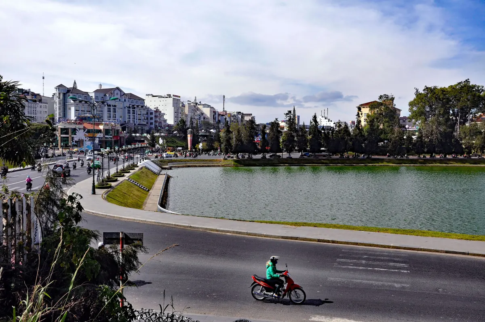
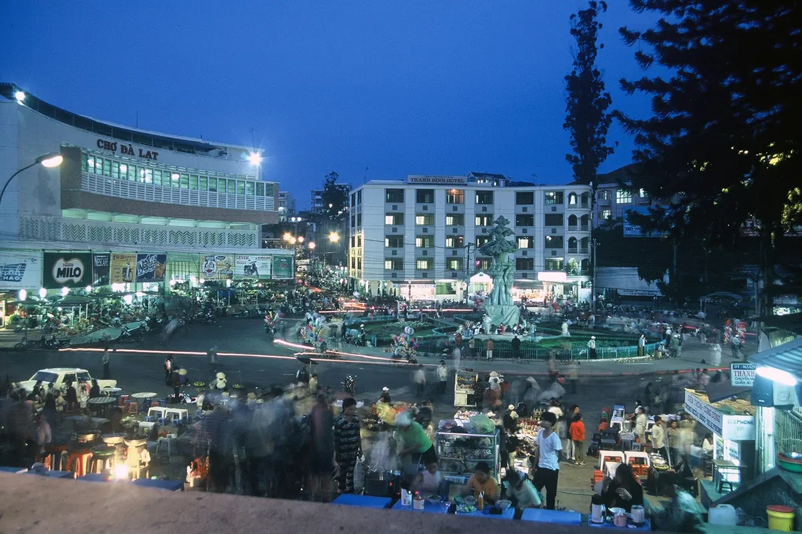
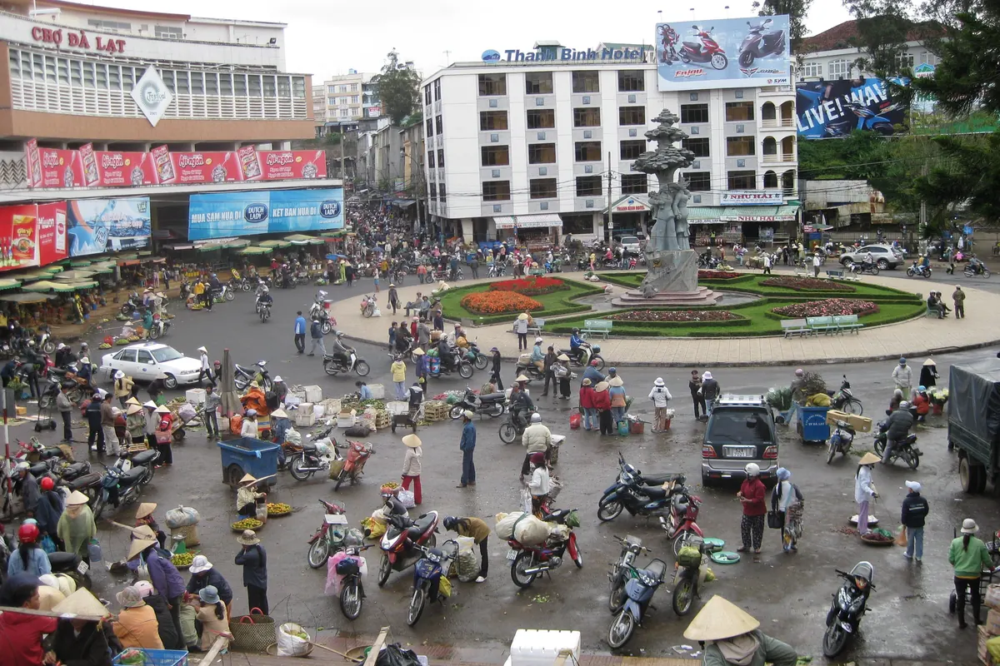

Lịch trình du lịch Đà Lạt 3 ngày 2 đêm hợp lý nhất là chia theo buổi: sáng ăn đặc sản, chiều cafe view đồi, và đặt riêng buổi chiều-tối ngày đầu cho bữa nướng BBQ ngắm cảnh. Điểm nhấn ẩm thực được nhiều khách chọn là Tiệm Nướng Trạm Dừng Chill — nơi vừa nướng vừa ngắm hoàng hôn thung lũng và tuyến xe lửa cổ chạy ngay dưới chân quán, đạt 4.8/5 sao với 7.060 lượt đánh giá trên Google Maps (số đọc ngày 04/09/2026).
Tổng quan lịch trình 3 ngày 2 đêm
Đà Lạt đẹp nhất khi đi thong thả. 3 ngày 2 đêm là khung thời gian lý tưởng để vừa khám phá trung tâm, vừa chạm tới thiên nhiên ngoại ô mà không phải vội vã. Dưới đây là lịch trình theo ngày, kèm các mốc ăn uống thật để bạn lên kế hoạch.
| Ngày | Buổi sáng | Buổi trưa | Chiều - Tối |
|---|---|---|---|
| Ngày 1 | Bánh mì xíu mại, cafe phin | Dạo trung tâm, ăn món đường phố | Nướng BBQ ngắm hoàng hôn tại Trạm Dừng Chill |
| Ngày 2 | Phở gà, thiên nhiên ngoại ô | Lẩu gà lá é | Cafe view, dạo chợ đêm |
| Ngày 3 | Bánh căn, sữa đậu nành | Bún bò Huế | Mua đặc sản, lên đường về |
Ngày 1 — Trung tâm Đà Lạt & bữa tối highlight
Sáng: khởi đầu chuẩn cao nguyên
Bắt đầu ngày bằng bánh mì xíu mại — món sáng huyền thoại của Đà Lạt với nước sốt đậm đà, xíu mại mềm mịn. Sau đó ghé một quán cafe view đồi, gọi ly Arabica phin nóng và ngồi ngắm sương tan trong nắng sớm. Đây là khoảnh khắc yên bình rất riêng của thành phố sương.
Trưa: dạo trung tâm, ăn món đường phố
Tham quan các điểm trong trung tâm, chụp hình vườn hoa thành phố. Bữa trưa có thể chọn bún bò Huế (Đà Lạt có cộng đồng người Huế đông nên rất chuẩn vị), cơm tấm sườn nướng than, hoặc mì Quảng nước lèo đậm đà.

Chiều - Tối: nướng BBQ ngắm 3 view tại Trạm Dừng Chill
Đây là điểm nhấn của cả chuyến đi. Trạm Dừng Chill mở cửa 15:00–23:00, nằm ở 111 Huỳnh Tấn Phát, Phường Xuân Trường. Nên có mặt khoảng 16:00: bạn kịp đón tàu từ lúc bắt đầu chạy qua quán (16:30), rồi ngồi lại ngắm hoàng hôn 180° xuống thung lũng (từ khoảng 16:30), rồi đến khoảng 18h30 hàng ngàn nhà lồng (nhà kính) đồng loạt lên đèn tạo nên "biển sao nhà lồng" lung linh. Bạn muốn đối chiếu thì cạnh đó có Xóm Lèo (số 113, quán cùng chủ với Trạm Dừng Chill), cũng nướng BBQ và nhìn xuống thung lũng nhà lồng.
Điểm đặc biệt là tuyến tàu lửa cổ Đà Lạt – Trại Mát (đoạn dài khoảng 7 km còn chạy tàu du lịch, thuộc tuyến đường sắt do Pháp xây) chạy ngay dưới chân quán. Vừa nướng vừa nghe còi tàu là trải nghiệm hiếm có. Canh theo khung giờ tàu chạy qua quán để kịp chụp hình:
Tàu lửa cổ tuyến Đà Lạt – Trại Mát chạy qua quán trong khung 16:30 – 21:25.
Về món, Trạm Dừng Chill là quán nướng BBQ tại bàn kết hợp lẩu, hải sản, món ăn kèm và đồ uống — hơn 70 món gọi lẻ, mức chi 95.000đ–300.000đ/người đã gồm VAT. Vài món best seller: Ba Chỉ Bò Cuộn Kim Châm 137K, Ba Chỉ Bò Nướng Muối Tiêu 155K, và món signature Bò Kobe Nướng Tảng Phô Mai Trứng Muối 209K. Nếu mê hải sản thì có Cá Tầm Lúc Lắc 165K, Ốc Nhồi Thịt 165K, Tôm Chiên Trứng Muối 160K. Xem đầy đủ tại thực đơn.
Lưu ý: khung 17:30–19:00 Trạm Dừng Chill thường kín bàn nên không nhận đặt bàn mới có giờ đến trong khung này — hãy chọn giờ đến trước 17:30 hoặc từ 19:30. Chi tiết cách canh tàu xem thêm bài săn tàu Đà Lạt.
Ngày 2 — Ngoại ô, thiên nhiên & chợ đêm
Buổi sáng dành cho phở gà Đà Lạt — nước dùng trong vắt, thịt gà ta săn chắc — rồi đi khám phá ngoại ô: thung lũng, đồi chè Cầu Đất, hoặc trekking nhẹ. Bữa trưa nhất định thử lẩu gà lá é, món gà thả vườn nấu lá é thơm phức (Trạm Dừng Chill cũng có Lẩu Gà Lá É, 300K một nồi, nhưng quán mở từ 15:00 nên chỉ ăn được vào bữa chiều – tối).

Buổi chiều thư giãn ở một quán cafe view rừng thông. Tối, dạo chợ đêm Đà Lạt thưởng thức bánh tráng nướng ("pizza Đà Lạt"), ốc, sữa đậu nành nóng — kết thúc ngày bằng ly sữa ấm giữa trời se lạnh.

Ngày 3 — Cafe, mua sắm trước khi về
Sáng thong thả với bánh căn giòn nóng chấm nước mắm ngọt kèm sữa đậu nành. Trưa ăn bún bò Huế hoặc quay lại lẩu gà lá é. Trước khi rời thành phố, ghé chợ Đà Lạt mua đặc sản: mứt dâu, cà phê Arabica, trà atiso, rượu vang. Hỏi giá trước để tránh bị "chặt chém".

Chi phí ước tính (tham khảo)
Một chuyến Đà Lạt 3 ngày 2 đêm thường rơi vào khoảng 1,8–3,5 triệu đồng một người, chưa tính vé xe hoặc vé máy bay liên tỉnh. Con số này giảm đáng kể khi đi từ hai người trở lên vì tiền phòng và tiền thuê xe chia được.
| Hạng mục | Chi phí tham khảo |
|---|---|
| Khách sạn (phòng đôi, 2 đêm) | 300.000–600.000đ/phòng/đêm |
| Ăn uống | 200.000–400.000đ/ngày/người |
| Vé tham quan | 100.000–200.000đ/người/ngày |
| Thuê xe máy | 100.000–150.000đ/xe/ngày |
| Tổng 3 ngày 2 đêm (không tính vé đi lại liên tỉnh) | ~1,8–3,5 triệu/người nếu một người trả trọn phòng và xe; đi 2 người chia phòng, chia xe thì thấp hơn |
Rút gọn còn 2 ngày 1 đêm?
Nếu chỉ có cuối tuần, bạn vẫn trải nghiệm đủ: sáng bánh mì xíu mại + cafe, trưa lẩu gà lá é + kem bơ, chiều-tối nướng BBQ tại Trạm Dừng Chill, rồi tối chạy về trung tâm dạo chợ đêm. Ngày hôm sau ăn sáng thong thả và mua đặc sản trước khi về. Tổng chi phí gọn hơn nhiều.
Vì sao bữa tối ngày 1 nên là Trạm Dừng Chill?
So với việc chỉ ăn nướng đơn thuần, lợi thế thật của quán nằm ở trải nghiệm "3 trong 1" mà ít nơi có:
- View xe lửa cổ — tuyến Đà Lạt – Trại Mát chạy ngay dưới chân quán, điều mà phần lớn quán nướng trong thành phố không có.
- Hoàng hôn thung lũng 180° (nắng chiều vàng từ 15h, hoàng hôn từ khoảng 16h30) và "biển sao nhà lồng" từ khoảng 18h30.
- Setup sinh nhật / kỷ niệm miễn phí — trang trí bàn tiệc tặng kèm (cọc 200.000đ, hoàn lại sau khi ăn xong), hợp cho nhóm có dịp đặc biệt.
- Giá minh bạch — menu niêm yết rõ, 95K–300K/người, đã gồm VAT.
- Đánh giá thật — 4.8 sao, hơn 7.060 lượt trên Google.
Nếu chuyến đi của bạn có dịp riêng, tham khảo thêm tổ chức sinh nhật, hẹn hò cầu hôn hoặc team building để được setup phù hợp.
Lời nhắn từ chủ tiệm
Một chuyến Đà Lạt trọn vẹn không cần phải chạy đua điểm check-in. Cứ ăn ngon, đi chậm, và dành một buổi chiều ngồi nhìn tàu chạy qua thung lũng — bạn sẽ nhớ Đà Lạt theo cách rất riêng. Tụi mình mở cửa từ 15h mỗi ngày, đặt bàn trước qua form trên website hoặc Zalo 0989.765.070, bên mình xác nhận lại trong khoảng 15 phút (trong giờ mở cửa). Hẹn gặp bạn ở khung giờ hoàng hôn nhé.
Câu hỏi thường gặp
Đi Đà Lạt 3 ngày 2 đêm hết bao nhiêu tiền?
Khoảng 1,8–3,5 triệu đồng/người cho 3 ngày 2 đêm, chưa tính vé đi lại liên tỉnh. Cách tính: 2 đêm phòng đôi 300–600K/phòng/đêm, ăn uống 200–400K/người/ngày, vé tham quan 100–200K/người/ngày, thuê xe máy 100–150K/xe/ngày trong 3 ngày, giả định một người trả trọn phòng lẫn xe. Đi nhóm chia phòng và xe sẽ thấp hơn; dịp lễ, cuối tuần giá phòng thường cao hơn.
Buổi tối ở Đà Lạt nên ăn gì và đi đâu?
Công thức được nhiều khách chọn: đến Trạm Dừng Chill từ 16h ăn nướng BBQ ngắm hoàng hôn và xe lửa cổ, đến khoảng 18h30 ngắm biển sao nhà lồng, sau đó chạy về trung tâm dạo chợ đêm ăn vặt. Quán mở 15:00–23:00.
Mấy giờ tàu lửa cổ chạy qua Trạm Dừng Chill?
Tàu chạy ngang quán trong khung 16:30 – 21:25. Xem thêm ở trang săn tàu Đà Lạt.
Nên đến Trạm Dừng Chill lúc mấy giờ để có chỗ đẹp?
Có mặt khoảng 16:00 để đón tàu từ lúc bắt đầu chạy qua quán (16:30) rồi ngồi lại ngắm hoàng hôn. Lưu ý khung 17:30–19:00 quán thường kín khách và không nhận đặt bàn mới, nên đến sớm hơn hoặc chọn từ 19:30, và đặt bàn trước qua website.
Đi Đà Lạt mấy ngày là hợp lý?
Lý tưởng là 3 ngày 2 đêm để vừa khám phá trung tâm, ngoại ô và ăn uống thong thả. Nếu chỉ có cuối tuần thì 2 ngày 1 đêm vẫn đủ trải nghiệm các đặc sản chính và một bữa nướng ngắm view.
Trạm Dừng Chill có món gì nổi bật và giá bao nhiêu?
Quán có hơn 70 món, giá 95.000–300.000đ/người. Món signature là Bò Kobe Nướng Tảng Phô Mai Trứng Muối 209K; best seller có Ba Chỉ Bò Cuộn Kim Châm 137K, Cá Tầm Lúc Lắc 165K. Xem đầy đủ ở thực đơn.
Quán có chỗ đỗ ô tô không?
Trạm Dừng Chill có bãi đỗ miễn phí cho cả xe máy và ô tô con ngay tại quán. Quán ở 111 Huỳnh Tấn Phát, Phường Xuân Trường, cách trung tâm Đà Lạt khoảng 7 km, đi xe khoảng 20 phút theo hướng Trại Mát. Giờ cao điểm cuối tuần có thể phải đỗ xa hơn khoảng 100–200m. Quán mở từ 15:00 nên đến sớm sẽ đỗ dễ hơn; Grab và taxi vào được tận nơi.